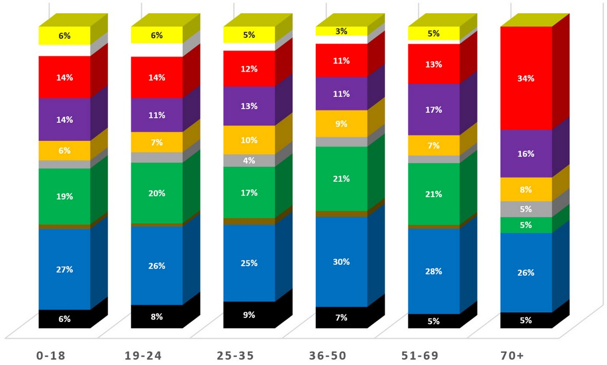

Exercises That Fit You
By Mahmoud Idlbi and Frederick Munro
The Covid-19 pandemic has made it difficult for all of us to stay healthy. As cities shut down gyms, outdoor sporting events, and even social gatherings, it has become increasingly difficult to go outside and stay active. Lack of activity is proven to have serious consequences not only on the health of our bodies, but also on our mental health. Luckily, there is no shortage of online resources on exercises. But many of these exercises are not particularly suitable for aging adults whom some of which suffer from diseases such as arthritis, diabetes, and heart disease. Hence, we would like to introduce Active Aging, a smart application that takes YOU into consideration when designing your personalized exercise routine.
Our Research
As part of our research to deliver an inclusive and accessible application, we looked at Apple's Human Interface Guidelines as well as applications targeting aging adults that are performing well in the app market to study the user's preferences. The applications we studied are Daily Yoga, selected for the 2022's App Store Editor's Choice Awards, and FitOn which received over 350,000 five-star reviews in the App Store. Observing common features amongst these applications, reviewing well written articles, and following Apple's guidelines inspired the design and user personas for Active Aging.
Personas
Based on our market research, we developed two personas that would fairly represent our target users. These personas vary in skills and personalities, providing us with desired features in our application to appeal to various types of users.
Antonio Lavoie
Antonio is very familiar with the use of technology. He is looking for an application that provides tailored exercises for his arthritis condition.

Juliette Cote
Juliette has been a fitness enthusiast for most of her life. However, work has made it difficult for her to stay active. She is looking for an application to help her get back in the fitness groove.

User Journeys
We created the following user journeys to anticipate how different users might interact with our product. Doing so allows us to prioritize key functionalities that support every type of user. Furthermore, we can use these user journeys to identify possible discomfort points for some users and how to address them in development.


Design
The User-Interface is centered on clarity and simplicity. The text's font and size are chosen to be legible and easy on the eyes for every device. The icons in the application were chosen because they are precise, easily recognizable, appropriate, and subtle. The content is made to fill the screen, while the use of a blurry background comfortably draws the user's attention to where it is required. Furthermore, transitions between screens provide depth as you navigate through content and are logically easy to follow.
Branding
Branding is minimal throughout the application to avoid causing confusion to the user. The application's logo is displayed solely on the home screen. Inside the application, all symbols and text serve only to relay or gather information to and from the user. As per Apple's Human Interface Guidelines, color from the app icon is used throughout the interface to provide context in the app.
Color
A sharp contrast of color is used in the application to highlight boxes, text fields, and buttons. Furthermore, color is used in the application to differentiate between interactive elements and non-interactive elements; therefore making the application easier to understand and learn.
However, other visual aids such as text labels and glyph shapes are used to make the application accessible to individuals with visual disabilities or colorblindness.
Below, you will find a chart (found here) showing the distribution of favorite colors based on age. We can clearly see that red is the most common favorite color among the elderly.
It also happens that red has the following effects according to this ElderTech article:
"Red promotes arousal and stimulation. Increased heart, respiration and metabolism rates. Will inhibit relaxation."
We decided to use red not only for its likeability among the elderly, but also for its effects that seem to increase their chances of exercising. We also included orange as it has the following effects according the same article from ElderTech:
"Orange is warming, triggers alertness, and is stimulating."
We believe the combination of these 2 colors and their effects on mood and emotions will entice people to exercise and allow the app to provide a welcoming feeling.
App Icon
Consistent with other components of Active Aging, the app icon embraces simplicity. It is designed to capture the essence of the application without overwhelming the user with overly complex shapes or details.
Buttons & Text Fields
A common design strategy in FitOn and Daily Yoga is the use of relatively large buttons. Furthermore, both applications utilize icons in buttons (when applicable) along with text; making the purpose of a button easier to understand.
Alongside implementing this design strategy, we also use a filled button for the most likely action in the view to improve the user's experience.
Textfields contain hints in them to communicate their purpose to the user. As well as being easily identifiable using glyph shapes and contrasting colors.
User Flow Diagram
By creating this workflow diagram, we set the direction we want users to go while using the app. We made sure to compartmentalize all the options inside a single dashboard. This allows the users to have one general navigation space, keeping the design simple to use.

Sketches
Below you will find our visual sketches. We focused on keeping the number of buttons as low as possible. We also made sure to make large buttons with big text to make them easy to read and understand.

Prototype
Based off our simple sketches, we designed a working visual prototype. Press on the buttons below to analyze and test it out.
The Wireframe button will open a link showing all the pages at once. This will
allow you to see a complete overview of the project and its flow.
The Visual prototype button will open an interactive version of the project. You will see one page at a time and be redirected to different pages based upon
the buttons you press.